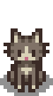
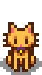
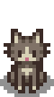
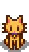
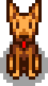
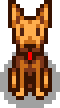

Animals fulfill several roles on the farm.
Some are wildlife, which cannot be interacted with. A pet (cat or dog) can be earned which the player can form a friendship with. A horse can be purchased to ride. And "farm animals" can be purchased which serve as a source of various kinds of produce, providing resources and profit.
Farm animals require a building to house them. These may be obtained from Robin at the Carpenter's Shop, and usually require three days each to build. Baby farm animals (and related equipment needed for harvesting produce) can then be purchased from Marnie's Ranch. Animals may also be hatched from an Incubator. As soon as an animal is acquired, it must be assigned to an existing farm building of the right type, which is designated as its home. Each building has a limit to the number of animals it can house. Animals can be assigned to a different building by first petting it and then interacting with it a second time. A pop-up box appears that allows the reassignment to be made.
Baby farm animals must first mature into adults before they are able to produce animal products. Each morning, adult animals that live in coops (chickens, ducks, rabbits and dinosaurs) have a chance of producing products that can be gathered from the floor of their building. Using the Milk Pail, cows can usually be milked daily, and goats can usually be milked once every two days. Sheep can be shorn with the Shears when their wool grows in, and pigs can be let outside to dig up truffles that then be picked up from the barnyard.
_________________________________________________________________________________________________________________
The player is allowed to adopt either a cat or a dog, depending on which was chosen on the character creation screen. There are three different styles of cat and three different styles of dog.
 



 


A cutscene will trigger where Marnie will be waiting outside the farm's door with a dog or cat on the first sunny Wednesday or Friday morning in Spring after earning 1,000g. The Farmhouse must be exited between 6am and 9:30am to trigger this event. By the 20th of Spring the event will trigger, regardless of if the player made enough money. Adopting the pet is optional. Any name can be chosen for the pet the moment it is adopted, though its name cannot be changed after adopting it. If the player has not yet met Marnie before this cutscene, the meeting will count as an introduction.
The pet has a maximum friendship of 1000, increasing by 12 every time it is petted.
Every 200 points is equal to 1 level, and having 999 friendship points will make the player eligible for 1 point in Grandpa's Evaluation.
Click on the pet once each day to pet it
After reaching 1000 friendship points with the pet, the following message pops up: " Animal Name loves you ♡" Other than this message, there is no way to check friendship with the pet in-game.
There is a bowl on some wooden tiles somewhere on the farm. It is in the top left area next to the house on the standard, forest, wilderness, hilltop, and riverland farms. It is on the intersection of the different sections on the four corners farm, and right above the right shore on the beach farm. The bowl can be filled with water for the pet. Watering the pet's bowl will result in the pet's friendship increasing by 6 points by next morning. Note that this will not trigger if it is raining the next morning. On rainy days, the pet's bowl will automatically be full. If it rains before adopting a pet, the bowl will remain full until adopting a pet.
There is no mechanism for pet friendship to decrease. Ignoring the pet or using a slingshot on it will not decrease friendship.
After earning 4 hearts of Friendship with the Wizard, the player can enter his basement and change the style of cat or dog at the Shrine of Illusions for 500g. The pet cannot be changed from cat to dog or vice-versa.

_________________________________________________________________________________________________________________
The horse is an in-game mount that boosts movement speed by 30% (increased by drinking coffee), and doesn't slow down while riding through crops on the farm. It's obtained by purchasing the Stable from the Carpenter's Shop, and can be named the first time the player tries riding it.
Leaving the horse somewhere will result in it waiting for the player and on their return one of these messages will be shown: "Horse name is wondering where you've been" or "Your loyal horse waits patiently for your return". Going to bed after leaving the horse outside the farm, will result in the horse automatically finding its way home and in the stable the next morning.